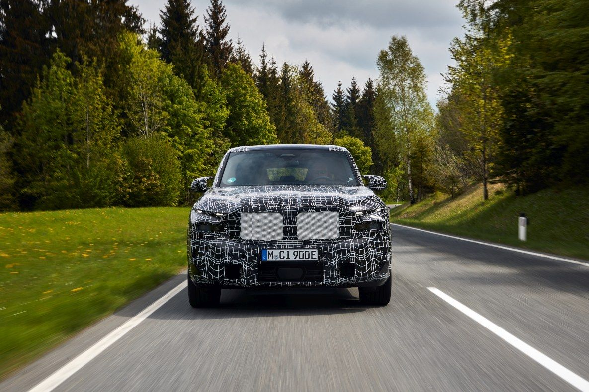
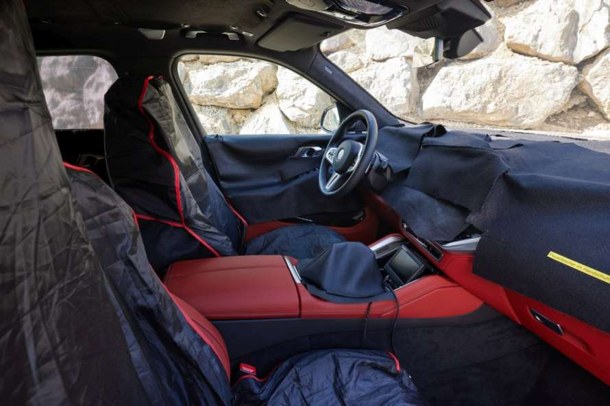
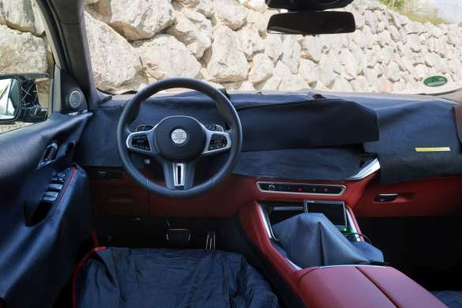

UNMISTAKABLE HIGH-PERFORMANCE.
Following the all-electric Performance models BMW i4 M50 and BMW iX M60,the BMW XM presents another facet of e-mobility within the high-performance car segment with the first M hybrid drive system. A newly developed V8 petrol engine combined with an electric drive mobilises a system output of 480 KW (650 hp). Combined torque is 800 Nm. With sovereignty at all times, power is effectively transferred to the road via the first hybrid-specific M xDrive four-wheel drive system, which is extremely spontaneous.
M SPECIFIC DRIVING DYNAMICS
The fact that the new BMW XM was designed as a pure BMW M automobile is also evident from its almost perfect 50: 50 axle-load distribution and its suspension technology. The new BMW XM is equipped with an Adaptive M Professional suspension as standard. This also includes a model-specific version of the springs and the electronically controlled shock absorbers as well as – for the first time in a BMW M automobile – an electromechanical roll stabilising system with 48-volt technology. With the additional Active Roll Comfort function, it reduces rolling movements due to uneven road surfaces on one side. At the same time it actively adjusts the body height on the corresponding side of the vehicle. Integral Active Steering is also part of the standard equipment of a BMW M automobile for the first time and promotes agility and cornering dynamics as well as driving stability when changing lanes.
 "Electrification gives us new opportunities to demonstrate that unmistakable M feeling in a fascinating way and transfer it to the road. Regardless of their drive technology, our performance and high-performance cars will continue to possess an unmistakable and authentic M character in the future."
Franciscus van Meel, CEO of BMW M GmbH